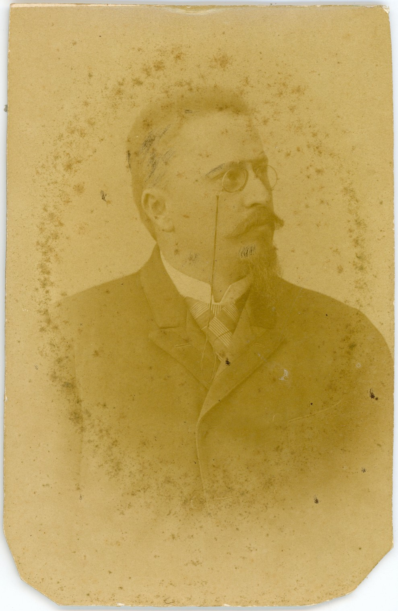
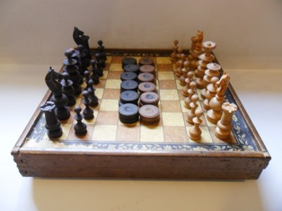
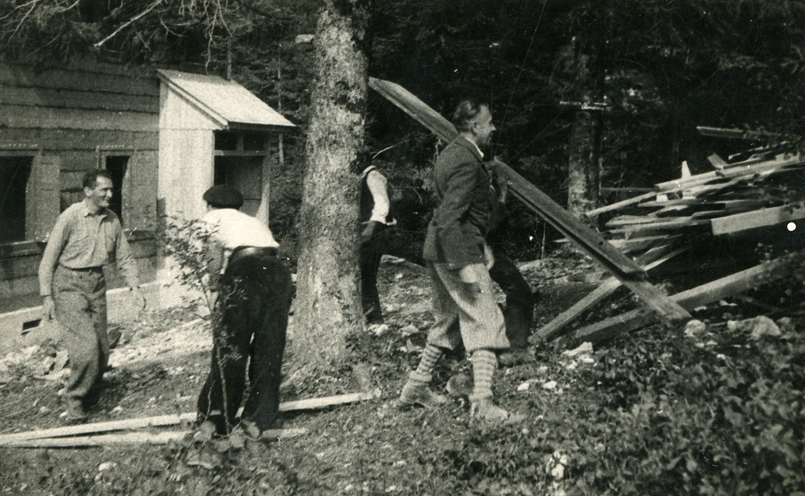
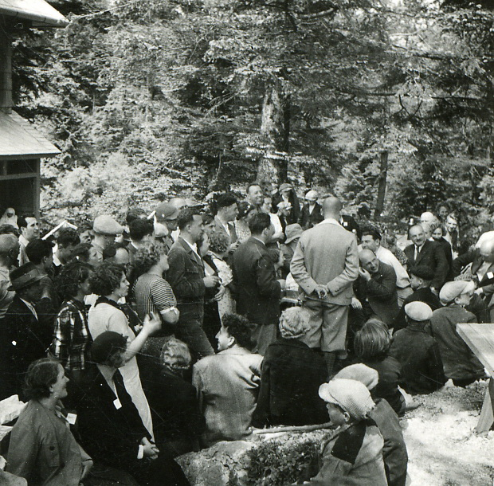

Ostali sportovi
KRONOLOGIJA
1883.
Adolf Jurinac postavljen za varaždinskog povjerenika Hrvatskog planinarskog društva


Adolf Jurinac, gimnazijski profesor, Heiszig, Varaždin, 1894., GMV 61585
rujan 1900.
prvi zabilježeni let balonom u Varaždinu
1904.
osnovano prvo šahovsko društvo u Varaždinu pod nazivom Varaždinsko šah društvo

Igra šaha i mlina, Hrvatska, 19. st., GMV KPO 9277
1913.
osnovano Ribarsko društvo
1919.
osnovano Planinarsko društvo u Varaždinu
1919.
prvi ribnjaci na glinokopima u Turčinu
1920.
organiziran prvi izlet Planinarskog društva u Varaždinu od Novog Marofa do Varaždin
1920.
u Varaždinu odigran prvi pojedinačni šahovski turnir
1921.
prvi uspon varaždinskih planinara na Triglav
1922.
osnovan Varaždinski šahovski klub
1923.
odigrana prva simultanka u Varaždinu
1923.
Planinarsko društvo u Varaždinu pristupa Hrvatskom planinarskom društvu i preuzima naziv Ravna Gora
1926.
Sadi Kalabar pobjednik A skupine Nacionalnog amaterskog turnira
1927.
Konrad Grims osvaja prvo mjesto na vojnom natjecanju
1928.
početak gradnje planinarskog doma na Ravnoj Gori

Rad oko uređenja planinarskog doma na Ravnoj Gori, S. Abramović, Ravna Gora, 1932., GMV 69469
1930.
na inicijativu Branka Rusana osnovan Aero-klub Naša krila
1932.
otvorenje planinarskog doma na Ravnoj Gori

Proslava na Ravnoj Gori, Ravna Gora, 1935., GMV 69482
1935.
na Vinokovčaku uređen prvi varaždinski aerodrom
1945.
unutar zrakoplovne grupe Atom djeluju modelari i jedriličari
od 1945.
šahovske sekcije Slobode i Tekstilca
1946.
obnavljeno djelovanje Varaždinskog ribolovnog društva
1947.
osnovano Zrakoplovno društvo Varaždin
1948.
osnovano Šahovsko društvo Varaždin
1954.
osnovan Aero-klub Varaždin
1955.
prvo izdanje Varteks A-2 kupa
1956.
osnovan Kotarski odbor sportskih ribolovnih društava Varaždin
1960.
Čedo Vertuš prvak Jugoslavije u klasi modela jedrilica A-2
1963.
na mjestu Doma srušenog u Drugom svjetskom ratu otvoren novi planinarski dom na Ravnoj Gori
1965.
na Ravnoj Gori otvoren vidikovac u obliku čelične piramide
1966.
prvo izdanje Internacionalnog aeropiknika
1968.
osnovan Šahovski klub Partizan
1969.
puštena u promet cesta koja vodi do Planinarskog doma
1970.
momčad VRD-a ekipni prvak Hrvatske u konkurenciji seniora
1970.
Branko Tkalec, VRD, pojedinačni prvak Hrvatske u konkurenciji seniora
1972.
Slavko Držanić iz VRD pojedinačni prvak Hrvatske u konkurenciji seniora
1973.
Branko Tkalec iz VRD pojedinačni prvak Hrvatske u konkurenciji seniora
1973.
održano prvo orijentacijsko natjecanje na Ravnoj Gori – Vukovićev memorijal
1974.
ŠD Varaždin osvaja naslov momčadskog prvaka Hrvatske
1974.
momčad VRD-a ekipni prvak Hrvatske u konkurenciji seniora
1974.
Slavko Držanić pojedinačni prvak Hrvatske u konkurenciji seniora
1974.
Radoslav Jerbić poštarski prvak Hrvatske
1975.
osnovano Planinarsko društvo Dugi vrh
1980.
osnovano Planinarsko društvo LTA
1991.
Planinarsko društvo LTA mijenja ime u MIV